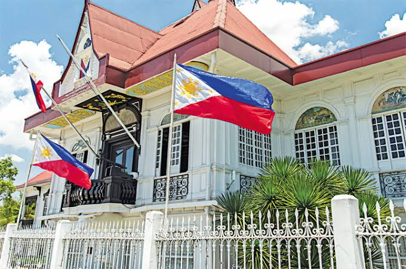

Naging biktima ako ng daloy ng globalisasyon.
inilathala ni Aggnuch noong ika-13 ng Oktubre, 2020
Hango sa https://businessmirror.com.ph/2019/06/
12/from-flag-day-to-independence-day/
Naging biktima ako. Inangkin ko muna ang Ingles bago ang Filipino, at hanggang ngayon ay hindi ako nahuhusayan sa aking kakayahan sa pakikipag-usap sa sarili kong wika. Higit na kaya kong ipahayag ang sarili ko sa Ingles kaysa sa Filipino. Nais ko talagang ipakita sa buong mundo ang aking mga damdamin ko. Gusto ko isigaw sa buong mundo ang aking pagka-Pilipino at ang pagmamalaki ko sa aking kultura. Ngunit paano ko ito magagawa nang may limitasyon ang ating leksikon sa halos bawat aspeto ng buhay?
Paano nagagawa ng mga tao na maipahayag ang sarili nila gamit ang sari-saring mga salita? Maraming salita sa ating wika ngunit nawawala ito sapagkat walang nakakaalala sa mga ito. Tanging mga makata o ang mga dalubhasa lamang ang nakakagamit sa mga salita na hindi natin naririnig sa araw-araw. Tinuturing natin itong mga "weird" na salita, siguro dahil sa dami ng kanilang mga pantig? Dahil mahaba siyang pakinggan? O dahil hindi natin sila nakasanayan? Napalitan na ng mga salita mula sa iba't ibang mga wika ang ating pang-araw-araw na pakikipag-usap.
Paano tayo uunlad bilang isang bansa kapag ginagamit natin ang wikang hindi ating kinasususuan? Kadalasan ay nahahalo na sa ating mga pangungusap ang mga salitang banyaga. Oo, mayroong mga salita na hindi maipapahayag nang maayos sa ating kultura, pero hindi dapat tayong nanghihiram ng mga salita kung mayroon naman pala tayong sarili! Oo, nagbabago nga ang wika, likas sa wika na magbago, ngunit papayag ba tayo na ang ating pagkakakilanlan ay nanggaling sa mga umapi sa atin? Papayag ba tayo na mamamatay ang ating kultura at libo-libong taon ng kasaysayan dahil sumasabay tayo sa uso, dahil sa tingin natin ay mas mahalaga ang dayuhang kultura kaysa sa ating pinagmulan? Hinding-hindi ako papayag na mangyayari iyan, dapat tayong lahat ay hindi.
Napansin ko sa mga laro na mayroong Ingles, Kastila, Tsino, Hapones, halos lahat ng wika na sinasalita ng milyon-milyon ay naipagmamalaki. Pero bakit ako nanghihinayang sa isang laro na isinalin sa sarili kong wika? Karamihan sa populasyon ng Pilipinas ay gumagamit ng wikang Filipino, ngunit pinipili nating gamitin na lamang ang Ingles dahil hindi maganda ang pagkasalin sa laro, o walang opsyon na laruin ang laro sa Filipino. Gayundin ang masasabi ko sa mga websayt, at lahat ng mga makabagong teknolohiya sa ika-21 siglo. Sa larangan ng akademiya ay napipili ng ilang mga dalubhasa sa atin na magsaliksik gamit ang wikang Ingles dahil limitado ang panitikan sa mga siyentipikong mga pag-aaral.
Huwag magkamali, mayaman tayo sa panitikan, lalo na kapag pinag-uusapan ang mga epiko, tula, maikling kwento, at nobela. Ngunit nararamdaman ko na hindi natin gaanong pinahahalagahan ang mga akda na isinulat ng ating mga ninuno, at pinipili na basahin ang mga akda mula sa ibang bansa. Naging biktima rin ako dahil minsan ay tinangkilik ko ang ilan sa mga iyan. Inangkin ko nang minsan ang tugtuging mula sa kanluran, silangan, lahat ng direksyon ngunit halos kinalimutan ang pinagmulan. Siguro nangyayari ito sa akin dahil likas sa sarili ko na makinig sa musika mula sa iba't ibang panig ng mundo. Pinanood ko ang mga palabas sa wikang Ingles, Hapones, Koreano, at iba pa, pero naiwan ang mga palabas sa sarili kong wika, dahil nabulag ako sa sabi ng ibang tao na "pangit" ang mga pelikula at palabas sa wikang Filipino, at nakikisabay ako sa kung ano ang uso sa aking henerasyon ngayon.
Paunti-unti na akong naliliwanagan na kung bakit ganito ang kalagayan ng ating wika ngayon. Pinipili ng iba na gamitin ang Ingles sa pakikipag-usap, tinatangkilik ng ilan sa atin ang mga media at panitikan mula sa ibang mga kultura, at sa gayon ay pawala nang pawala ang wikang Filipino. Dahil sa daloy ng globalisasyon ay dapat nating taksilan at iwanan ang wikang ating pinagmulan? Lalo na at mas marami na tayong kaalaman tungkol sa mundo, hindi dapat tayo nagpapa-alipin sa ibang kultura. Matatag tayo, likas na sa atin na maging malakas, bakit hindi natin sanayin ang sarili natin na gamitin ang sariling wika sa lahat ng aspeto ng buhay? Oo, mahirap talaga, pero ang mga tao ang dapat mag-adjust sa atin dahil wika natin ito, kultura natin ito at walang sinuman ang dapat ipagwalang-bahala ito.
Sana ay mas makilala at maipagmalaki natin ang ating kultura sa pamamagitan ng ating wika. Kung pangit man ang turing ng ilan sa atin sa mga palabas o pelikula mula sa atin, marami namang paraan na lalong mapaganda ang mga ito. At tsaka huwag natin sanang maliitin ang larangan ng musika at sining dahil maraming mga magagaling at talentadong mga artistang dugong Pilipino. Bigyan sana natin ng hustisya ang mga pinapahayag ang sarili nila sa malikhaing paraan katulad ng pagkanta at pagguhit.
Huwag sana tayong mabiktima ng hindi paggamit ng sarili nating wika.